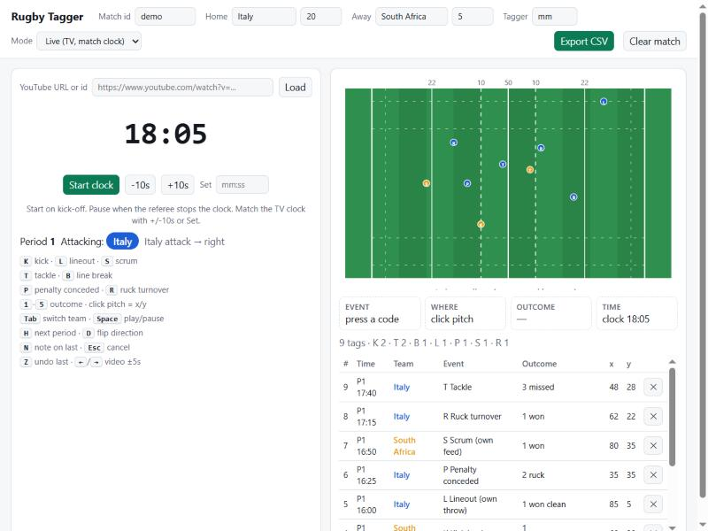

The dossier: 12 patterns, written before kick-off
Proof it predates the match
Committed to the project's git history as a276988 on Fri 20 Nov 2026, 17:54:27 (SAST, UTC+2), 24 hours 45 minutes before the 16:40 UTC (18:40 SAST) kick-off. Full commit id: a276988fb5beb404dcc98ea3e4b6173e674dfcc9. The patterns on this tab are the committed machine-readable file; the build fails if that file differs from the committed one.
Each pattern is an observation from recent Tests with a stated test, not a forecast of who wins. The "form" line is what the data showed before the match; the sample size is beside it. The mark comes on the Review tab.
South Africa outscore Ireland in the 0-20 minute window.
Form: Net points per Test in 0-20: South Africa +7.8, Ireland +2.3. Sample: SA 10 Tests, Ireland 11 Tests. Script:
python -m src.analysis.scoring.The 20-40 window is the closest of the four: the smallest gap between the sides' points, compared with 0-20, 40-60 and 60-80.
Form: Net per Test in 20-40: South Africa +1.7, Ireland -1.8 (the smallest of the four windows for both sides). Sample: SA 10 Tests, Ireland 11 Tests. Script:
python -m src.analysis.scoring.South Africa outscore Ireland in the 40-60 minute window.
Form: Net points per Test in 40-60: South Africa +8.0, Ireland +5.1. Sample: SA 10 Tests, Ireland 11 Tests. Script:
python -m src.analysis.scoring.Ireland outscore South Africa in the 60-80 minute window.
Form: 60-80 per Test: Ireland scored 9.3 and conceded 3.7 (net +5.5); South Africa scored 10.9 and conceded 6.1 (net +4.8). Mixed evidence: South Africa score more, Ireland concede less. Sample: SA 10 Tests, Ireland 11 Tests. Script:
python -m src.analysis.scoring.South Africa score at about the same rate before and after their 5th permanent substitution (within 0.10 points a minute).
Form: Points a minute before / after the 5th substitution: 0.49 / 0.507 (mean 5th sub at 52.4 min). Sample: SA 10 Tests. Script:
python -m src.analysis.bench.Ireland score faster after their 5th permanent substitution than before it.
Form: Points a minute before / after: 0.382 / 0.508; conceded 0.329 / 0.147 (mean 5th sub at 57.8 min). Sample: Ireland 11 Tests. Script:
python -m src.analysis.bench.A yellow card costs the carded side: combined net points in the 10 minutes after a yellow are negative for the carded sides.
Form: Net points in the 10 minutes after a yellow: Ireland -2.2 a card (4 costed), South Africa -4.7 a card (6 costed). Sample: Ireland 4 and SA 6 yellows in reconciled Tests. Script:
python -m src.analysis.cards.At least one yellow card is shown across the match.
Form: Yellow cards in the last 12 Tests: Ireland 8, South Africa 7 (reds: Ireland 1, South Africa 2). Sample: 12 Tests each. Script:
python -m src.analysis.cards.More of Ireland's tries come from the backs (jerseys 9-15) than from the forwards (jerseys 1-8).
Form: Ireland tries by scorer: forwards 18, backs 28, replacements 7 (of 53). Sample: Ireland 12 Tests. Script:
python -m src.analysis.try_sources.South Africa score at least one try through a replacement (jerseys 16-23).
Form: SA tries by replacements: 13 of 62 (12 Tests, about one a Test). Sample: SA 12 Tests. Script:
python -m src.analysis.try_sources.Ireland score more points in the second half than in the first.
Form: Ireland points, first / second half: 160 / 207 (11 Tests); South Africa 194 / 203 (10 Tests). Sample: Ireland 11 Tests. Script:
src/analysis/dossier_ireland.py (half_split).The final margin is 7 points or fewer.
Form: Head-to-head since 2022 in the ESPN data: 4 of 5 Tests were decided by 7 or fewer (2022 16-19, 2023 8-13, 2024 27-20, 2024 24-25, 2025 24-13 as SA-Ireland). Sample: 5 head-to-heads. Script:
src/analysis/dossier_ireland.py (h2h).
Rules for marking, fixed in advance
A window needs at least 5 points from both sides together; a try share needs at least 3 tries; a half comparison needs 10 points; bench rates need 5 permanent substitutions and at least a minute of play after the 5th; the closest-window pattern needs 20 points in the match and the 20-40 gap must be strictly the smallest (a tie is Did not hold); if the timeline does not add up to the final score every timeline pattern is No basis; ties do not count as outscoring.
Not measurable, and said so before the match
- Team stats (possession, territory, tackles, carries, metres, set-piece outcomes): no reliable free source.
- Referee record: ESPN carries no officials.
- Penalties conceded: the feed has only cards.
- Try build-up: the feed gives the scorer, not the move.
Review: Ireland 20, South Africa 17
Half time 17-10. Held 5, Did not hold 5, No basis 2, out of 12.
Each pattern is marked by a script against the match timeline, by the rules written before the match. Held means the stated test came out true in this match; it says nothing about whether a pattern is real. Several tests are close to coin flips on one match, and the dossier did not claim otherwise.
Did not hold South Africa outscore Ireland in the 0-20 minute window.
0-20: South Africa 3, Ireland 10.
Did not hold The 20-40 window is the closest of the four: the smallest gap between the sides' points, compared with 0-20, 40-60 and 60-80.
absolute margin by window: 0-20 7, 20-40 0, 40-60 4, 60-80 0.
Held South Africa outscore Ireland in the 40-60 minute window.
40-60: South Africa 7, Ireland 3.
No basis Ireland outscore South Africa in the 60-80 minute window.
60-80: only 0 points in the window (Ireland 0, South Africa 0).
Held South Africa score at about the same rate before and after their 5th permanent substitution (within 0.10 points a minute).
South Africa scored 0.212/min before the 5th permanent sub (min 47.1) and 0.213/min after.
Did not hold Ireland score faster after their 5th permanent substitution than before it.
Ireland scored 0.331/min before the 5th permanent sub (min 60.4) and 0.0/min after.
Did not hold A yellow card costs the carded side: combined net points in the 10 minutes after a yellow are negative for the carded sides.
South Africa: 1 yellow, net +0 in the 10 minutes after; Ireland: 1 yellow, net +0 in the 10 minutes after; combined net +0.
Held At least one yellow card is shown across the match.
yellow cards: South Africa 1, Ireland 1.
Held More of Ireland's tries come from the backs (jerseys 9-15) than from the forwards (jerseys 1-8).
Ireland tries: forwards 1-8 1, backs 9-15 2, bench 16-23 0.
No basis South Africa score at least one try through a replacement (jerseys 16-23).
South Africa scored 2 tries (needs 3).
Did not hold Ireland score more points in the second half than in the first.
Ireland points: first half 17, second half 3.
Held The final margin is 7 points or fewer.
final margin 3 (final score 20-17).
Scripts: src/analysis/patterns.py, src/review_ireland.py. Source: ESPN match timeline and lineups, event 604007; the timeline adds up to the final score (20-17), so every pattern was markable where its minimum sample was met.
A. Score flow
Ireland led for 69.5 of 80 minutes; the lead peaked at 10
South Africa led for 2.9 minutes (after the opening penalty, until Ireland's first try at 7.5'); the score was level for 7.6. There was 1 lead change in 10 scoring events. Ireland's biggest lead was 10 points; South Africa's was 3. After South Africa's conversion at 58.3' the margin stayed at 3.
Show the numbers
| Minute | Margin (Ireland minus South Africa) |
|---|---|
| 0 | +0 |
| 4.6 | -3 |
| 7.5 | +2 |
| 18.8 | +7 |
| 35.2 | +2 |
| 36.1 | +0 |
| 39.1 | +5 |
| 40.1 | +7 |
| 53.4 | +10 |
| 57.5 | +5 |
| 58.3 | +3 |
Script: src/analysis/margin_flow.py.
B. Points by 10-minute window
Both sides scored 7 in the 30-40 window; neither scored in the last 20 minutes
Ireland's largest window was 30-40' (7 points). Windows with no points from either side: 20-30', 40-50', 60-70', 70-80'. Ireland scored 17 points in the first half and 3 in the second; South Africa 10 and 7.
Show the numbers
| Window (min) | Ireland | South Africa |
|---|---|---|
| 0-10 | 5 | 3 |
| 10-20 | 5 | 0 |
| 20-30 | 0 | 0 |
| 30-40 | 7 | 7 |
| 40-50 | 0 | 0 |
| 50-60 | 3 | 7 |
| 60-70 | 0 | 0 |
| 70-80 | 0 | 0 |
Script: src/analysis/windows10.py. First-half stoppage stays in 30-40 and second-half stoppage in 70-80 (feed match clock).
C. Longest unanswered run
Ireland had two unanswered runs of 10; South Africa's best was 7
Ireland's two runs of 10 were two tries between 7.5' and 18.8' (ended by South Africa's try at 35.2'), and a try, conversion and penalty between 39.1' and 53.4' (ended by South Africa's try at 57.5'). South Africa's best was 7, twice: a try and conversion at 35.2' (ended by Ireland's try at 39.1') and a try and conversion at 57.5', which was still unanswered at full time. Longest scoreless spells: South Africa 30.6 minutes (4.6' to 35.2'); Ireland 26.6 minutes (53.4' to full time).
Show the numbers
| Team | Points | Minutes | Made up of | Ended by |
|---|---|---|---|---|
| Ireland | 10 | 7.5-18.8 | try, try | South Africa try at 35.2' |
| Ireland | 10 | 39.1-53.4 | try, conversion, penalty goal | South Africa try at 57.5' |
| South Africa | 7 | 35.2-36.1 | try, conversion | Ireland try at 39.1' |
| South Africa | 7 | 57.5-58.3 | try, conversion | full time |
A run is consecutive scores by one side with no score by the other in between, so a try and its conversion count together. Script: src/analysis/runs.py.
D. How the 3-point margin was made
Ireland +5 from tries, -2 from conversions, +0 from penalties
Ireland scored 3 tries, 1 conversion and 1 penalty goal (20); South Africa 2 tries, 2 conversions and 1 penalty goal (17). No drop goals or penalty tries. Ireland's tries without a conversion: 2 (4 points); South Africa's: 0. The unconverted points (4) are more than the final margin (3); that is a fact about the arithmetic, not a claim about what would have happened.
| Team | Tries | pts | Conversions | pts | Penalty goals | pts | Drop goals | Total |
|---|---|---|---|---|---|---|---|---|
| Ireland | 3 | 15 | 1 | 2 | 1 | 3 | 0 | 20 |
| South Africa | 2 | 10 | 2 | 4 | 1 | 3 | 0 | 17 |
Points available v points taken: what can and cannot be known
The free feed lists only kicks that scored. It has no missed penalty or drop-goal attempts, and no record of kicks at goal that were not taken, so the points available from penalties cannot be known. Conversions are the exception: every try offers one and the timeline adds up to the final score, so a try without a conversion in the feed was a conversion not scored. The feed cannot tell a miss from a kick not attempted.
Script: src/analysis/composition.py.
E. Substitutions against scoring
No replacement scored a try, conversion or penalty in the match
Permanent changes only (temporary covers and their reversals are removed). Ireland made 6 permanent changes (first at 51.5', fifth at 60.4'); South Africa 8 (first at 25.7', fifth at 47.1'). Tries and penalty goals after the 5th change: Ireland none; South Africa Malcolm Marx (No. 2) try at 57.5'. Tries and penalty goals after the first Ireland change: Sam Prendergast (No. 10) penalty goal at 53.4'. Every try, conversion and penalty was scored by a player who started, so "who scored after the bench came on" is answered by the starters: 0 of the 5 tries came from the replacements' jerseys (16-23).
Show the numbers
| Team | Minute | On | Off |
|---|---|---|---|
| Ireland | 51.5 | Thomas Clarkson | Tadhg Furlong |
| Ireland | 51.5 | Bundee Aki | Robbie Henshaw |
| Ireland | 60.4 | James Ryan | Joe McCarthy |
| Ireland | 60.4 | Nick Timoney | Josh van der Flier |
| Ireland | 60.4 | Tom Stewart | Ronan Kelleher |
| Ireland | 71.3 | Tom O'Toole | Andrew Porter |
| South Africa | 25.7 | Canan Moodie | Damian Willemse |
| South Africa | 47 | Gerhard Steenekamp | Ox Nche |
| South Africa | 47 | Thomas du Toit | Wilco Louw |
| South Africa | 47 | Lood de Jager | Franco Mostert |
| South Africa | 47.1 | Paul de Villiers | Siya Kolisi |
| South Africa | 53 | Cameron Hanekom | Pieter-Steph du Toit |
| South Africa | 61.5 | Jan-Hendrik Wessels | Malcolm Marx |
| South Africa | 63.9 | Grant Williams | Damian de Allende |
Script: src/analysis/bench_scoring.py, using the permanent-substitution rule in src/analysis/review.py.
F. Discipline
Two yellow cards 9 seconds apart; no points scored after either
Dan Sheehan (Ireland) was shown a yellow at 71.8' and Marco van Staden (South Africa) at 71.9'. No red cards. In the 8.2 and 8.1 minutes left to 80:00 neither side scored, so the cost of each card in points is 0 for each side (net +0). The usual 10-minute window is cut short because the cards came late, and the feed has no clock beyond the last event, so any stoppage time is not counted.
Show the numbers
| Team | Player | Card | Minute | Window (min) | Scored after | Conceded after | Net |
|---|---|---|---|---|---|---|---|
| Ireland | Dan Sheehan | yellow | 71.8' | 8.2 | 0 | 0 | +0 |
| South Africa | Marco van Staden | yellow | 71.9' | 8.1 | 0 | 0 | +0 |
Penalties conceded are not in the feed, only cards. Script: src/analysis/discipline.py.
G. Try origin: backs v forwards
Ireland: 2 tries by backs, 1 by a forward; South Africa one each
This is who scored, not how the move began. Both of Ireland's back tries were by the same player, the No. 14 wing. Ireland's forward try and South Africa's forward try were both scored by the hooker. The dossier pattern on Ireland's tries (pattern 9) used the same jersey groups.
| Team | Tries | Forwards 1-8 | Backs 9-15 | Replacements 16-23 | Scorers |
|---|---|---|---|---|---|
| Ireland | 3 | 1 | 2 | 0 | Robert Baloucoune (No. 14, back) at 7.5'; Robert Baloucoune (No. 14, back) at 18.8'; Ronan Kelleher (No. 2, forward) at 39.1' |
| South Africa | 2 | 1 | 1 | 0 | Morne van den Berg (No. 9, back) at 35.2'; Malcolm Marx (No. 2, forward) at 57.5' |
Lineout, scrum, kick or turnover origin is not in the feed. Script: src/analysis/try_origin.py.
What this data cannot show
The free ESPN feed gives scores, cards, substitutions, scorers and lineups. It does not give any of the following, so nothing below appears anywhere on this page and none of it is estimated:
- Possession and territory. No source for team stats at this level (see "How I built it").
- Ruck speed, carries, metres, line breaks.
- Lineout and scrum success, and which set piece a try came from.
- Kick metrics: kicks in play, contestables, kick-chase, and missed kicks at goal.
- Tackles and missed tackles.
- Penalties conceded and the referee record.
Professionals code these from video (see the last tab). Our own tagger can, but only from film a person has watched; no tags exist for this match.
How I built it
A one-person project on an old laptop, using Claude Code agents for the drafting and checking and plain scripts for every number. No inside access to any team; public data and published methods only.
1. Data: ESPN timeline plus our own database
ESPN's free match feed gives scores, scorers, cards, substitutions and lineups. Each match is fetched once, cached, and loaded into SQLite. Every match is reconciled to its final score; the few that do not add up (a penalty try missing from the feed) are flagged and left out of timeline numbers, never patched.
2. The dossier, before kick-off
Twelve patterns from each side's last 12 Tests, written to a file and committed to git on Fri 20 Nov 2026, 17:54:27 (SAST, UTC+2) (a276988), 24 hours 45 minutes before kick-off. The commit time is the proof; the page build checks that the file is unchanged.
3. Worded so a result can mark it
Each pattern has a fixed test (for example "South Africa score more than Ireland in the 40-60 window"), so the mark afterwards is a script, not a judgement made once the score is known.
4. Marking rules
A window needs at least 5 points from both sides together to be judged, a try share needs 3 tries, a half comparison 10 points, bench rates 5 permanent substitutions. Below that, the mark is No basis, which is why two patterns here are No basis rather than guesses. A tie is not "outscoring".
5. Independent review
Nobody publishes their own work. A separate reviewer agent on Claude Opus re-runs the scripts, compares every number with the page, and checks sources, rights and wording. This page was held until it passed; the reviewer's verdict is recorded in the project's docs.
6. Every number from a script, with a sample
Every figure is computed by a script in src/analysis/, each with tests and an entry in the metrics glossary, and every chart says how many matches or events it rests on. One-match charts are labelled "descriptive, not a trend".
What the checks caught (from the project's own records)
- Short timelines, kept visible. Two South Africa form Tests and Ireland v South Africa 2025 were short by exactly 7 points: probably a penalty try the feed omits. They were flagged and excluded, not patched.
- Two team-stats sources failed (a 404 and a page with no past-match stats). Possession and territory were dropped rather than guessed, and are listed under "cannot show".
- The Italy look-back failed its first review. The reviewer sent back 14 edits, among them: a scoring gap described as coming after the bench, when South Africa had scored at 49.7'; a "5th substitution" count that included temporary cover (the 5th change was given as 35.7', but the first permanent change was at 47.2'); and a "biggest miss" claim the data did not carry. The permanent-substitution rule used on this page came out of that.
- The Ireland dossier passed review with no wrong numbers and four small wording fixes, applied before the commit shown above.
- A named conflict kept in the open. ESPN lists Thomas Clarkson at No. 18 for Ireland, The42 lists Sam Illo; the dossier used ESPN and said so.
- The project's records show no separate council review of the rugby pages, so none is claimed here.
Stack, in one line
Python scripts and pytest, SQLite for the data, Claude Code agents for drafting and review, plain HTML and inline SVG for this page.
The same method elsewhere
- Italy v South Africa, 7 Nov 2026 (rugby)
- South Africa v Bangladesh series and 2nd Test (cricket)

What a rugby coach or sports data analyst would do
I am not a team analyst; this is how the published practice works and what I copied at small scale. I have no access to any team's analysis staff. Everything in the "published practice" column comes from the sources linked on that line; where I found no source, I say it is my own approach or leave the claim out.
| Step | Published practice | What I copied at small scale | What I cannot do |
|---|---|---|---|
| 1. Decide what to measure from the game plan, before the match | World Rugby's coach education says analysis should follow the game plan, tracking the elements that show whether the plan is working [1]. Coaches interviewed in one study said KPIs were added or removed across a season [1]. | The dossier: 12 patterns with fixed tests written before kick-off, and rules for when a result can mark them. | I do not have a game plan. My patterns come from public form data, not a team's intentions. |
| 2. Code every event from video | Analysts code matches in tools such as Hudl Sportscode; the vendor lists offline coding, a timeline and interactive reports linked to video [1]. Hudl also says the Springboks use it before, during and after matches to keep a database of key events, and quotes their analyst wanting to build a library of lineouts, scrums and general play [1] (vendor claim). | A small tagger of my own (see the "How I built it" tab): a clickable pitch, hotkeys, CSV export. | No broadcast video is downloaded or published, so I can code only what I watch myself. No tags exist for this match. |
| 3. Profile the opposition and their patterns of play | Five professional coaches interviewed in Australia used analysts for match preview and review, selection, training design and player feedback [1]. A review of 41 studies found most use isolated performance indicators and rarely give context such as opposition information, pitch location or venue [1]. | Form windows: each side's last 12 Tests by scoring window, bench timing and discipline, shown with sample sizes. | Scoring timelines only. No possession, territory, set-piece or defensive-shape data, so no pattern-of-play profile. |
| 4. Review after the match, with a few messages | World Rugby describes a "hot debrief" straight after the game with a statistical look at the game model, and later a more detailed code of the match shared with footage [1]. Coaches in one study warned about information overload and wanted numbers explained simply [1]. | The Review tab runs by script at full time. My own rule, not a sourced standard: lead with a few messages, not fifty numbers. For this match, three: the two unconverted Ireland tries are 4 points against a 3-point margin; neither side scored in the last 20 minutes; every point was scored by a starter. | I do not run a debrief with players, and I cannot say what the right messages are without the game plan. |
| 5. Track trends across a season | I found no source for specific season-dashboard designs in rugby, so I make no claim about them beyond the point above that KPI sets change during a season [1]. | Form windows over 12 Tests are the small version. Every one-match chart here is labelled "one match: descriptive, not a trend". | A season of tagged data. One match cannot show a trend. |
| 6. Monitor player load and welfare | A survey of the 12 English Premiership clubs found GPS in use at all of them (10 used one vendor), no consensus on best practice, and GPS valued more for injury-risk management than for performance assessment [1]. The paper does not cover how such data are shared or protected. | Nothing. There is no load data in a free feed, and by my own rule it would never be public: players here are public figures and only match performance data is used. | All of it. |
| 7. Communicate in the coaches' and players' language | Coaches valued visuals, brief written reports and verbal presentations, and analysts who explain what the numbers mean in a simple, practical sense [1]. World Rugby: footage, code and reports go to coaches and players together [1]. | Plain-English claims under each chart, the sample size on the chart, and a "show the numbers" table beneath it. | I do not know any team's vocabulary or how its players prefer to receive feedback. |
Limits of these sources
- The coach interviews are five coaches in Australia; a small sample. The Premiership survey covers conditioning staff at 12 clubs (published 2019). Hudl pages are vendor marketing.
- I found no public source on how many key messages an analyst should give. The "few messages" rule above is mine.
Sources
- World Rugby Passport, Post-match analysis. https://passport.world.rugby/coaching/developing-your-performance-analysis-skills/match-day-analysis/post-match/
- World Rugby Passport, What to analyse. https://passport.world.rugby/coaching/introduction-to-performance-analysis/what-to-analyse
- Colomer et al. 2020, Performance Analysis in Rugby Union: a Critical Systematic Review, Sports Medicine - Open. https://pmc.ncbi.nlm.nih.gov/articles/PMC6962412/
- Callinan et al. 2023, Exploring rugby coaches perception and implementation of performance analytics, PLoS ONE. https://pmc.ncbi.nlm.nih.gov/articles/PMC9873156/
- West et al. 2019, Athlete Monitoring in Rugby Union: Is Heterogeneity in Data Capture Holding Us Back?, Sports. https://pmc.ncbi.nlm.nih.gov/articles/PMC6571870/
- Hudl Sportscode (vendor page). https://www.hudl.com/products/sportscode
- Hudl, Tackling elite rugby union analysis with the Springboks (vendor blog). https://hudl.com/blog/tackling-elite-rugby-union-analysis-with-the-springboks